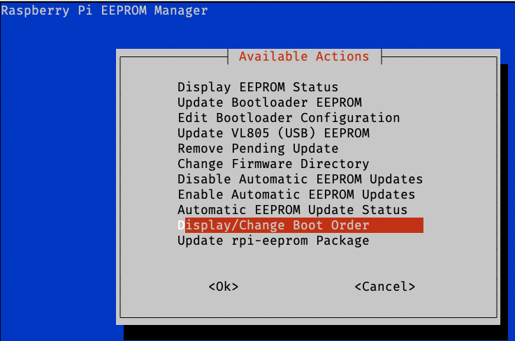

Dev/user-sysmaint-splitDesignDonation systrayPrevious page: Dev/user-sysmaint-splitIndex page: DesignNext page: Donation systrayBoot Process
Boot Process Related Development Notes
shim
- Debian shim feature request: Offer a shim-signed variant signed by Debian's Secure Boot key
- While it may be technically possible for an EFI binary such as
Debian's
shim-signedpackage to be signed by two public keys (Microsoft's key and Debian's key), this is unlikely to be implemented in Debian because it might break certain broken UEFI implementations, possibly on some motherboards.- In theory, it might be discovered that this issue does not occur in practice, which could be confirmed by researching a large number of UEFI implementations. However, it seems highly unlikely that such expensive research will be undertaken by any party.
- See also Verified Boot chapter Keys.
GRUB
GRUB Slow Upstream
We all know and love GRUB2. It is a good boot loader. It is also big, complex, rich, massive and tends to move slow on the development side.openSUSE blog post Systemd-boot and Full Disk Encryption in Tumbleweed and MicroOS talking about their motivation to add support for systemd-boot
The openSUSE package for this boot loader contains more than 200 patches. Some of those patches are there for the last 5, 6 ... 10 years. That is both an indication of the talent of the maintainers, but also can signal an issue in how slow the upstream contribution process can be.openSUSE blog post Systemd-boot and Full Disk Encryption in Tumbleweed and MicroOS talking about their motivation to add support for systemd-boot
GRUB Feature Richness
GRUB2 supports all the relevant systems, including mainframes, arm or powerpc. Multiple types of file systems, including btrfs or NTFS. It contains a full network stack, an USB stack, a terminal, can be scripted ... In some sense, it is almost a mini OS by itself.openSUSE blog post Systemd-boot and Full Disk Encryption in Tumbleweed and MicroOS talking about their motivation to add support for systemd-boot
GRUB Full Disk Encryption
Kicksecure doesn't use GRUB to unlock encrypted disks. This is because we use Debian's GRUB, and Debian's GRUB only has very bad LUKS support (only supports LUKS1, can't handle non-US keyboard layouts, ugly, slow, only gives you one shot to unlock the drive, and then the Linux kernel has to unlock the drive again once it boots). Instead, we use an unencrypted /boot partition and let the initramfs handle decrypt. This lets us use more secure encryption, provides a better user interface for decryption, works with multiple keyboard layouts, and works faster.https://forums.kicksecure.com/t/installing-fde-luks-with-detached-luks-header-option/907/2
See also:
GRUB Upstream Contributions
- Determining when paging is and isn't enabled in GRUB
- DRAFT PATCH 0/1 - Add Xen command line parsing
- DRAFT PATCH 1/1 - Add Xen command line parsing
- PATCH 0/1 - Add Xen command line parsing
- PATCH 1/1 - Add Xen command line parsing
grub-install command responsibility
Who should run the grub-install command?
SystemBuildTools or Debian package maintainer scripts?
As it is currently designed, it seems SystemBuildTools are
supposed to execute the grub-install command.
calamares installer runs grub-install.
live-build has extensive code to set up GRUB and other
bootloaders. mkosi uses grub-mkimage.
It's the system build tool that is responsible for setting up the bootloader, which requires running bootloader installation commands.
Don't call grub-install on fresh install of grub-pc. It's the job of installers to do that after a fresh install.
grub2package, Debian changelog, Colin Watson Nov 2020
Core Bootloader Packages
Kicksecure uses different metapackages to provide the bootloader for different systems. grub-cloud is used on Kicksecure VMs, while grub-efi and grub-pc-bin are used by the ISO.
grub-cloud package
You don't want to use this package outside of cloud images.
grub-cloud-amd64package, Debian
grub-cloud-amd64 package and
/etc/default/grub file inclusion:
/etc/default/grubList of files
Non-issue: grub-cloud, while it has "cloud" in
its name, and while it may be suitable for installation on cloud
servers, has no additional networking or cloud features not found in
"standard" GRUB packages. grub-cloud does not "interact
with the cloud". It does not boot from the cloud or have other
problematic cloud features. Such features are not planned either. Its
source code is minimal and consists only of Debian packaging files and a
/etc/default/grub configuration file. The
grub-cloud package is a workaround for the lack of
grub-pc and grub-efi co-installability, a
workaround for Debian bug grub-efi-amd64:
Allow concurrent installation of grub-pc and grub-efi-amd64.
Source code references:
- grub-cloud source code
- AMD64
/etc/default/grub - ARM64
/etc/default/grub - AMD64
postinst - ARM64
postinst
AMD64 /etc/default/grub contents:
# If you change this file, run 'update-grub' afterwards to update
# /boot/grub/grub.cfg.
# For full documentation of the options in this file, see:
# info -f grub -n 'Simple configuration'
GRUB_DEFAULT=0
GRUB_TIMEOUT=5
GRUB_DISTRIBUTOR=`lsb_release -i -s 2> /dev/null || echo Debian`
GRUB_CMDLINE_LINUX_DEFAULT=""
GRUB_CMDLINE_LINUX="console=tty0 console=ttyS0,115200 earlyprintk=ttyS0,115200 consoleblank=0"
GRUB_TERMINAL_OUTPUT="gfxterm serial"
GRUB_SERIAL_COMMAND="serial --speed=115200"- Potential issues with
grub-cloudmanaging/etc/default/grub:- Running
debsums --changed --configwould list/etc/default/grubas a changed configuration file. - Setting
GRUB_CMDLINE_LINUX="console=tty0 console=ttyS0,115200 earlyprintk=ttyS0,115200 consoleblank=0"can cause issues:- Security concerns?
- Systemd log spam inside VirtualBox:
- Running
serial-getty@ttyS0.service: Succeeded.
serial-getty@ttyS0.service: Service RestartSec=100ms expired, scheduling restart.
serial-getty@ttyS0.service: Scheduled restart job, restart counter is at 625.
Stopped Serial Getty on ttyS0.
Started Serial Getty on ttyS0.
/dev/ttyS0: not a tty
serial-getty@ttyS0.service: Succeeded.
serial-getty@ttyS0.service: Service RestartSec=100ms expired, scheduling restart.
serial-getty@ttyS0.service: Scheduled restart job, restart counter is at 626.
Stopped Serial Getty on ttyS0.
Started Serial Getty on ttyS0.
/dev/ttyS0: not a tty- VirtualBox: Adding a virtual disconnected serial console does not
help either. This causes:
- GRUB boot menu becoming invisible.
- No console output for a long time.
- Extremely slow boot times.
The serial console-related issues were encountered ~5 years ago when considering "why not enable a serial console by default inside VM images."
- Possible solution: If using a
grub-cloud-based solution, it may be better to undo the serial console setup. - Architectural limitations:
grub-cloudcurrently supports only a limited set of architectures (Intel/AMD64 and ARM64 at the time of writing). Depending on your plans for multi-architecture support (as Debian is the universal operating system), this may be a limitation.
Related Debian issues:
- bug report:
grub-pcandgrub-efico-installability: grub-efi-amd64: Allow concurrent installation of grub-pc and grub-efi-amd64 - bug report: grub-cloud-amd64: Ships /etc/default/grub, which installers need to be able to modify
- bug report: grub-cloud-amd64: not co-installable with grub-pc due to incompatible /etc/default/grub handling
Related Debian pull requests:
grub-efi and grub-pc
- Debian for grub-pc with grub-efi co-install-ability feature request: Allow concurrent installation of grub-pc and grub-efi-amd64
Bootloader-related Kicksecure and Whonix packages
The following packages directly affect the bootloader or bootloader configuration used by Kicksecure.
live-config-dist
- Purpose: Used to provide installer and live ISO configuration.
- Effects on bootloader:
- Sets the distro name and version shown on the boot menu of the live ISO.
- Ensures a menu entry for accessing UEFI firmware settings is added to the live ISO.
- Ensures the GRUB fallback bootloader is properly installed.
- Assists with initial bootloader installation on machines installed from the ISO.
dist-base-files
- Provides base configuration used by both Kicksecure and Whonix.
- Effects on bootloader:
- Provides customized versions of the grub-mkconfig scripts in order to reorganize the bootloader menu so that normal boot modes appear at the top, and "Advanced options" boot modes appear at the bottom.
- Provides common files for the Kicksecure and Whonix GRUB themes.
- For VM images (not ISO-installed systems), overrides non-ideal GRUB bootloader settings from grub-cloud, putting the kernel in quiet mode and disabling the serial console.
grub-live
- Provides a live boot mode. Changes made to the root filesystem in this mode are ephemeral and will be lost on reboot.
- Effects on bootloader:
- Adds entries to the boot menu for booting in live mode.
- Adds additional debugging info to the output of grub-mkconfig.
serial-console-enable
- Adds a TTY that can be accessed via the serial console.
- Effects on bootloader:
- Enables GRUB bootloader serial console output.
- Adds kernel parameters to the Linux kernel command line to enable a TTY on the serial console.
security-misc
- Enables a plethora of hardening features to increase the security of Kicksecure and Whonix.
- Effects on bootloader:
- Enables strong CPU vulnerability mitigations via the kernel command line.
- Enables several general kernel hardening features via the kernel command line.
- Puts the kernel into quiet logging mode via kernel parameters to avoid leaking sensitive info on the console during boot.
- Disables Dracut-based recovery features via kernel parameters to make it more difficult to get a root shell improperly.
usability-misc
- Provides miscellaneous usability improvements for Kicksecure.
- Effects on bootloader: Sets the default display resolution during early boot to 1024x768. (Note that this is NOT a hard limit; the end-user can set their resolution to whatever they want once the system is booted.)
debug-misc
- Enables a wide variety of debugging features. Not installed by default and should NOT be installed on systems where security is a concern.
- Effects on bootloader:
- Removes kernel parameters that would otherwise disable message printing on the console during early boot.
- Enables verbose debugging output in initramfs-tools, dracut, systemd, and the Linux kernel via kernel parameters.
- Disables SELinux enforcement via a kernel parameter. Kicksecure itself doesn't use SELinux by default, but debug-misc may be used on some other distro or a user might enable SELinux later, which could interfere with debugging.
kicksecure-base-files
- Provides base configuration specific to Kicksecure.
- Effects on bootloader:
- Sets the distro name shown on the boot menu of installed systems.
- Provides the Kicksecure-specific components of the GRUB theme.
- Sets the GRUB theme in GRUB itself.
- Sets the screen resolution for the GRUB menu to 1280x720 on EFI systems, and 1024x768 on BIOS systems.
user-sysmaint-split
- Prevents standard user accounts from using privilege escalation tools to obtain root and provides a special sysmaint boot mode in which root access can be obtained.
- Effects on bootloader:
- Adds a boot entry for booting into sysmaint session.
- Adds a boot entry for uninstalling user-sysmaint-split quickly and with minimal effort.
whonix-base-files
- Whonix-only. Provides base configuration specific to Whonix.
- Effects on bootloader: Sets the distro name shown on the boot menu of installed systems to a generic "Whonix" value. This is usually overridden by one of anon-ws-base-files or anon-gw-base-files.
anon-ws-base-files
- Whonix-only. Provides base configuration specific to Whonix-Workstation.
- Effects on bootloader:
- Sets the distro name shown on the boot menu of installed systems.
- Provides the Whonix-Workstation-specific components of the GRUB theme.
- Sets the GRUB theme in GRUB itself.
- Sets the screen resolution for the GRUB menu to 1280x720 on EFI systems, and 1024x768 on BIOS systems.
anon-gw-base-files
- Whonix-only. Provides base configuration specific to Whonix-Gateway.
- Effects on bootloader:
- Sets the distro name shown on the boot menu of installed systems.
- Provides the Whonix-Gateway-specific components of the GRUB theme.
- Sets the GRUB theme in GRUB itself.
- Sets the screen resolution for the GRUB menu to 1280x720 on EFI systems, and 1024x768 on BIOS systems.
Live ISO GRUB configuration
derivative-maker sets a custom GRUB configuration for Kicksecure live ISOs. This configuration is stored under derivative-maker/live-build-data/grub-config. The files in this directory are enumerated below, along with the job each one performs.
- config.cfg
- Provides base GRUB config setup. Loads fonts, video drivers, and the theme for GRUB, among other things.
- grub.cfg
- Template configuration file into which live-build inserts boot menu information. Provides menu entries for live boot, debian-installer (if applicable - currently this is not applicable to Kicksecure's ISOs), and launchers for utilities like memtest, firmware setup, and boot media checksumming.
- install_gui.cfg
- Only applicable when debian-installer is enabled (currently it is not for Kicksecure). Provides boot modes that launch either the GUI or text-mode Debian installer when debian-installer is enabled and GUI mode is selected.
- install_start_gui.cfg
- Vestigial, copied from the base live GRUB config in live-build. Unused by Kicksecure even if debian-installer is enabled.
- install_start_text.cfg
- Vestigial, copied from the base live GRUB config in live-build. Unused by Kicksecure even if debian-installer is enabled.
- install_text.cfg
- Only applicable when debian-installer is enabled (currently it is not for Kicksecure). Provides boot modes that launch the text-mode Debian installer when debian-installer is enabled and GUI mode is disabled.
- memtest.cfg
- Provides boot modes for launching Memtest86+.
- splash.svg
- Provides the background image for the GRUB splash screen used on the live ISO.
- theme.cfg
- Loads the GRUB theme from live-theme/theme.txt. Also provides a fallback default theme if this fails for some reason.
- live-theme/theme.txt
- Provides dynamic parts of the GRUB theme. Specifies the colors and positions of UI elements, and includes a progress bar indicating how much time the user has to react before GRUB automatically boots the first boot mode listed in the ISO's boot menu.
Calamares
Multiple Bootloader Maintenance Burden
Supporting another boot loader comes with a cost.openSUSE blog post Systemd-boot and Full Disk Encryption in Tumbleweed and MicroOS talking about their motivation to add support for systemd-boot
systemd-boot
systemd-boot - Limited Architecture Support
At time of writing, systemd-boot as can be seen on https://packages.debian.org/testing/systemd-boot
supported only the following architectures: amd64
arm64 armhf i386
riscv64
systemd-boot - random seed
- https://uapi-group.org/specifications/specs/boot_loader_specification/
- https://systemd.io/BOOT_LOADER_INTERFACE/
LoaderSystemToken
systemd-boot - SecureBoot Support
- https://bugs.debian.org/cgi-bin/bugreport.cgi?bug=1033725
- https://bugs.debian.org/cgi-bin/bugreport.cgi?bug=996202
- TODO: What is the latest status? Does systemd-boot in Debian support SecureBoot yet?
RPi
misc
- https://wiki.archlinux.org/title/Talk:GRUB#Custom_keyboard_layout
- https://cryptsetup-team.pages.debian.net/cryptsetup/encrypted-boot.html
keyboard layout issue
- https://github.com/calamares/calamares/issues/1772
- https://github.com/calamares/calamares/issues/1726
- https://github.com/calamares/calamares/issues/1203
- https://superuser.com/questions/974833/change-the-keyboard-layout-of-grub-in-stage-1
- https://cryptsetup-team.pages.debian.net/cryptsetup/encrypted-boot.html
Kicksecure Specific
GRUB - File Names
- /etc/grub.d/10_00_linux_dist
- /etc/grub.d/10_linux
has been forked by
dist-base-files
- /etc/grub.d/10_linux
has been forked by
- /etc/grub.d/10_20_linux_live
/etc/default/grub.d/20_dist-base-files.cfg
File /etc/default/grub.d/20_dist-base-files.cfg is used to undo the opinionated default configuration set by the Debian package grub-cloud package.
Why is the folder /usr/share/derivative-base-files used?
Why is the file copied using derivative-maker during the build process?
Why not simply ship the file as
/etc/default/grub.d/20_dist-base-files.cfg as part of
package dist-base-files? Because it is not applicable to
all image creation and installation methods. This should only be done
when building a VM image that uses grub-cloud (which is utilized by
grml-debootstrap).
VM images:
File /usr/share/derivative-base-files/20_dist-base-files.cfg
is copied by derivative-maker during the build process to
/etc/default/grub.d/20_dist-base-files.cfg.
Kicksecure's ISO:
The ISO does not need
/etc/default/grub.d/20_dist-base-files.cfg because it does
not use grub-cloud. (The ISO is build using
live-build, not grml-debootstrap.)
Calamares:
The installer used by Kicksecure's ISO, Calamares, edits the file
/etc/default/grub by adding rd.luks.uuid to
GRUB_CMDLINE_LINUX_DEFAULT. For example:
GRUB_CMDLINE_LINUX_DEFAULT='quiet rd.luks.uuid=dc1f531b-eea8-47b0-86f2-a841d6d61a4e'If the file /etc/default/grub.d/20_dist-base-files.cfg
were shipped unconditionally, it might break the boot process.
grub config file - calamares - grub unlocks full disk encrypted hard drive
#
# DO NOT EDIT THIS FILE
#
# It is automatically generated by grub-mkconfig using templates
# from /etc/grub.d and settings from /etc/default/grub
#
### BEGIN /etc/grub.d/00_header ###
if [ -s $prefix/grubenv ]; then
set have_grubenv=true
load_env
fi
if [ "${next_entry}" ] ; then
set default="${next_entry}"
set next_entry=
save_env next_entry
set boot_once=true
else
set default="0"
fi
if [ x"${feature_menuentry_id}" = xy ]; then
menuentry_id_option="--id"
else
menuentry_id_option=""
fi
export menuentry_id_option
if [ "${prev_saved_entry}" ]; then
set saved_entry="${prev_saved_entry}"
save_env saved_entry
set prev_saved_entry=
save_env prev_saved_entry
set boot_once=true
fi
function savedefault {
if [ -z "${boot_once}" ]; then
saved_entry="${chosen}"
save_env saved_entry
fi
}
function load_video {
if [ x$feature_all_video_module = xy ]; then
insmod all_video
else
insmod efi_gop
insmod efi_uga
insmod ieee1275_fb
insmod vbe
insmod vga
insmod video_bochs
insmod video_cirrus
fi
}
if [ x$feature_default_font_path = xy ] ; then
font=unicode
else
insmod part_msdos
insmod cryptodisk
insmod luks
insmod gcry_rijndael
insmod gcry_rijndael
insmod gcry_sha256
insmod ext2
cryptomount -u bbbe98fd58fa4ab9ba3418f1c2e72c94
set root='cryptouuid/bbbe98fd58fa4ab9ba3418f1c2e72c94'
if [ x$feature_platform_search_hint = xy ]; then
search --no-floppy --fs-uuid --set=root --hint='cryptouuid/bbbe98fd58fa4ab9ba3418f1c2e72c94' bdad388c-f3f2-4f53-9f70-04efe2bc60eb
else
search --no-floppy --fs-uuid --set=root bdad388c-f3f2-4f53-9f70-04efe2bc60eb
fi
font="/usr/share/grub/unicode.pf2"
fi
if loadfont $font ; then
set gfxmode=auto
load_video
insmod gfxterm
set locale_dir=$prefix/locale
set lang=en_US
insmod gettext
fi
terminal_output gfxterm
if [ "${recordfail}" = 1 ] ; then
set timeout=30
else
if [ x$feature_timeout_style = xy ] ; then
set timeout_style=menu
set timeout=5
# Fallback normal timeout code in case the timeout_style feature is
# unavailable.
else
set timeout=5
fi
fi
### END /etc/grub.d/00_header ###
### BEGIN /etc/grub.d/05_debian_theme ###
insmod part_msdos
insmod cryptodisk
insmod luks
insmod gcry_rijndael
insmod gcry_rijndael
insmod gcry_sha256
insmod ext2
cryptomount -u bbbe98fd58fa4ab9ba3418f1c2e72c94
set root='cryptouuid/bbbe98fd58fa4ab9ba3418f1c2e72c94'
if [ x$feature_platform_search_hint = xy ]; then
search --no-floppy --fs-uuid --set=root --hint='cryptouuid/bbbe98fd58fa4ab9ba3418f1c2e72c94' bdad388c-f3f2-4f53-9f70-04efe2bc60eb
else
search --no-floppy --fs-uuid --set=root bdad388c-f3f2-4f53-9f70-04efe2bc60eb
fi
insmod png
if background_image /usr/share/desktop-base/emerald-theme/grub/grub-4x3.png; then
set color_normal=white/black
set color_highlight=black/white
else
set menu_color_normal=cyan/blue
set menu_color_highlight=white/blue
fi
### END /etc/grub.d/05_debian_theme ###
### BEGIN /etc/grub.d/10_linux ###
function gfxmode {
set gfxpayload="${1}"
}
set linux_gfx_mode=
export linux_gfx_mode
menuentry 'Debian GNU/Linux' --class debian --class gnu-linux --class gnu --class os $menuentry_id_option 'gnulinux-simple-bdad388c-f3f2-4f53-9f70-04efe2bc60eb' {
load_video
insmod gzio
if [ x$grub_platform = xxen ]; then insmod xzio; insmod lzopio; fi
insmod part_msdos
insmod cryptodisk
insmod luks
insmod gcry_rijndael
insmod gcry_rijndael
insmod gcry_sha256
insmod ext2
cryptomount -u bbbe98fd58fa4ab9ba3418f1c2e72c94
set root='cryptouuid/bbbe98fd58fa4ab9ba3418f1c2e72c94'
if [ x$feature_platform_search_hint = xy ]; then
search --no-floppy --fs-uuid --set=root --hint='cryptouuid/bbbe98fd58fa4ab9ba3418f1c2e72c94' bdad388c-f3f2-4f53-9f70-04efe2bc60eb
else
search --no-floppy --fs-uuid --set=root bdad388c-f3f2-4f53-9f70-04efe2bc60eb
fi
echo 'Loading Linux 6.1.0-9-amd64 ...'
linux /boot/vmlinuz-6.1.0-9-amd64 root=UUID=bdad388c-f3f2-4f53-9f70-04efe2bc60eb ro quiet cryptdevice=UUID=bbbe98fd-58fa-4ab9-ba34-18f1c2e72c94:luks-bbbe98fd-58fa-4ab9-ba34-18f1c2e72c94 root=/dev/mapper/luks-bbbe98fd-58fa-4ab9-ba34-18f1c2e72c94 splash resume=/dev/mapper/luks-e17af10a-e7fc-489c-943f-1713e5ad292a
echo 'Loading initial ramdisk ...'
initrd /boot/initrd.img-6.1.0-9-amd64
}
submenu 'Advanced options for Debian GNU/Linux' $menuentry_id_option 'gnulinux-advanced-bdad388c-f3f2-4f53-9f70-04efe2bc60eb' {
menuentry 'Debian GNU/Linux, with Linux 6.1.0-9-amd64' --class debian --class gnu-linux --class gnu --class os $menuentry_id_option 'gnulinux-6.1.0-9-amd64-advanced-bdad388c-f3f2-4f53-9f70-04efe2bc60eb' {
load_video
insmod gzio
if [ x$grub_platform = xxen ]; then insmod xzio; insmod lzopio; fi
insmod part_msdos
insmod cryptodisk
insmod luks
insmod gcry_rijndael
insmod gcry_rijndael
insmod gcry_sha256
insmod ext2
cryptomount -u bbbe98fd58fa4ab9ba3418f1c2e72c94
set root='cryptouuid/bbbe98fd58fa4ab9ba3418f1c2e72c94'
if [ x$feature_platform_search_hint = xy ]; then
search --no-floppy --fs-uuid --set=root --hint='cryptouuid/bbbe98fd58fa4ab9ba3418f1c2e72c94' bdad388c-f3f2-4f53-9f70-04efe2bc60eb
else
search --no-floppy --fs-uuid --set=root bdad388c-f3f2-4f53-9f70-04efe2bc60eb
fi
echo 'Loading Linux 6.1.0-9-amd64 ...'
linux /boot/vmlinuz-6.1.0-9-amd64 root=UUID=bdad388c-f3f2-4f53-9f70-04efe2bc60eb ro quiet cryptdevice=UUID=bbbe98fd-58fa-4ab9-ba34-18f1c2e72c94:luks-bbbe98fd-58fa-4ab9-ba34-18f1c2e72c94 root=/dev/mapper/luks-bbbe98fd-58fa-4ab9-ba34-18f1c2e72c94 splash resume=/dev/mapper/luks-e17af10a-e7fc-489c-943f-1713e5ad292a
echo 'Loading initial ramdisk ...'
initrd /boot/initrd.img-6.1.0-9-amd64
}
menuentry 'Debian GNU/Linux, with Linux 6.1.0-9-amd64 (recovery mode)' --class debian --class gnu-linux --class gnu --class os $menuentry_id_option 'gnulinux-6.1.0-9-amd64-recovery-bdad388c-f3f2-4f53-9f70-04efe2bc60eb' {
load_video
insmod gzio
if [ x$grub_platform = xxen ]; then insmod xzio; insmod lzopio; fi
insmod part_msdos
insmod cryptodisk
insmod luks
insmod gcry_rijndael
insmod gcry_rijndael
insmod gcry_sha256
insmod ext2
cryptomount -u bbbe98fd58fa4ab9ba3418f1c2e72c94
set root='cryptouuid/bbbe98fd58fa4ab9ba3418f1c2e72c94'
if [ x$feature_platform_search_hint = xy ]; then
search --no-floppy --fs-uuid --set=root --hint='cryptouuid/bbbe98fd58fa4ab9ba3418f1c2e72c94' bdad388c-f3f2-4f53-9f70-04efe2bc60eb
else
search --no-floppy --fs-uuid --set=root bdad388c-f3f2-4f53-9f70-04efe2bc60eb
fi
echo 'Loading Linux 6.1.0-9-amd64 ...'
linux /boot/vmlinuz-6.1.0-9-amd64 root=UUID=bdad388c-f3f2-4f53-9f70-04efe2bc60eb ro single
echo 'Loading initial ramdisk ...'
initrd /boot/initrd.img-6.1.0-9-amd64
}
}
### END /etc/grub.d/10_linux ###
### BEGIN /etc/grub.d/20_linux_xen ###
### END /etc/grub.d/20_linux_xen ###
### BEGIN /etc/grub.d/30_os-prober ###
### END /etc/grub.d/30_os-prober ###
### BEGIN /etc/grub.d/30_uefi-firmware ###
### END /etc/grub.d/30_uefi-firmware ###
### BEGIN /etc/grub.d/40_custom ###
# This file provides an easy way to add custom menu entries. Simply type the
# menu entries you want to add after this comment. Be careful not to change
# the 'exec tail' line above.
### END /etc/grub.d/40_custom ###
### BEGIN /etc/grub.d/41_custom ###
if [ -f ${config_directory}/custom.cfg ]; then
source ${config_directory}/custom.cfg
elif [ -z "${config_directory}" -a -f $prefix/custom.cfg ]; then
source $prefix/custom.cfg
fi
### END /etc/grub.d/41_custom ###uboot
ARM
ARM - Generally
The situation used to be, and for the most part still is, as follows:
- Each SBC (single-board computer) usually has a different boot process.
- Most SBCs require either Debian forks or Armbian.
- There was a Snapdragon X Elite dev board with EFI boot support, so standard Debian could in theory be run. No bootloader/image modifications required. However, the Snapdragon X Elite dev board was deprecated upstream. In any case, it likely would have had poor or no Linux support initially.
The current situation may improve in the future, thanks to:
- Arm SystemReady Compliance Program
- Arm Base Boot Requirements (BBR)
- Arm Base Boot Security Requirements (BBSR)
- In the future, it might be useful to look for terminology such as "SystemReady IR compliant UEFI BIOS".
This is only theoretical research.
 Warning:
Warning:
- The Kicksecure project does not vet or endorse any of these services. No guarantees are made regarding their trustworthiness, reliability, or policies.
- Untested by Kicksecure project.
- Use at your own risk.
- Third-Party Policies and Non-Endorsement apply! See also project transparency.
Some Libre Computer boards support UEFI BIOS. In the Libre Computer product finder, check the "UEFI BIOS" filter button. Devices with UEFI BIOS and 4 GB RAM as of April 2025:
- Solitude AML-S905D3-CC (Amlogic)
- Alta AML-A311D-CC (Amlogic)
- Renegade Elite ROC-RK3399-PC (Rockchip RK3399 SoC)
Software Support
- Upstream Linux
- Upstream u-boot
Lifecycle
- 10 Years Hardware
- 15 Years Software
Instead of ARM64, Intel/AMD64 (sometimes referred to as x86) Mini-PCs might be a viable alternative, as these nowadays come with UEFI support by default, thus avoiding bootloader issues.
Bootloader issues aside, whether the architecture is Intel/AMD64 or ARM64, if Linux and/or Debian is supported (can run on that hardware) must always be verified before purchase.
Raspberry Pi - RPi
Bootloader Information - RPi
RPi Bootloader
The RPi has its own custom boot protocol, using an internal bootloader in the Broadcom GPU.
Debian images use direct kernel boot via that bootloader.
rpi-eeprom
This repository contains the scripts and pre-compiled binaries used to create therpi-eeprompackage, which is used to update the Raspberry Pi 4 and Raspberry Pi 5 bootloader EEPROM images.rpi-eeprom on GitHub
That boot protocol simply loads an operating system (OS) from a fixed location. The OS can be u-boot, UEFI EDK2, Linux, or anything else compatible.
The RPi bootloader can be configured using /boot/firmware/config.txt.
The RPi bootloader is not the same as u-boot, but it can chainload u-boot.
How to change Raspberry Pi's boot mode from SD Card to USB flash drive?
Raspberry Pi EEPROM Manager - rpi-eeprom-mgr

Raspberry Pi EEPROM Manager (
rpi-eeprom-mgr) is a menu-driven front-end forrpi-eeprom-update.Available actions include:
- Display EEPROM Status
- Update Bootloader EEPROM
- Edit Bootloader Configuration
- Update VL805 (USB) EEPROM
- Remove Pending Update
- Change Firmware Directory
- Disable Automatic EEPROM Updates
- Enable Automatic EEPROM Updates
- Automatic EEPROM Update Status
- Display/Change Boot Order
- Update
rpi-eepromPackageAll actions include a confirmation prompt before being executed.https://forums.raspberrypi.com/viewtopic.php?f=29&t=283347
u-boot on RPi
u-bootis not a strict requirement to boot RPi.- It is possible to boot RPi without
u-boot. - RPi can directly boot the Linux kernel (or other compatible operating systems, if any) using its factory default RPi Bootloader, as mentioned above.
- It is possible to boot RPi without
- It might be preferable to hide
u-bootfrom the user to avoid the need for manual configuration, due to relatively low familiarity compared to GRUB. u-bootis very likely required to enable (chainload) GRUB.- No version of GRUB that can be chainloaded directly by the factory default RPi Bootloader seems to exist.
- No documentation on how to chainload GRUB using the RPi Bootloader could be found by the author of this wiki page.
- See also #grub-uboot on RPi.
- Miscellaneous on memory addresses:
- PDF: UEFI on Top of U-Boot - Standardizing Boot Flow For ARM Boards
- Debian
u-boot-rpipackage:sudo apt-get install u-boot-rpi
Installation The Raspberry Pi targets can be installed by copying u-boot.bin to the FAT partition of the Raspberry Pi boot firmware: mkdir -p /boot/fat mount /dev/mmcblk0p1 /boot/fat cp -vb /usr/lib/u-boot/TARGET/u-boot.bin /boot/fat/ Then specify the u-boot.bin as the kernel to load in config.txt on the FAT partition: kernel u-boot.bin It should then support booting off of MMC and USB devices with serial console or HDMI with USB keyboard.Debian Salsa: u-boot-rpi.README.Debian
- u-boot
has UEFI-alike functionality that can be used to chainload
grub-efi.- Is this enabled by default in Debian? Yes.
CONFIG_EFI_LOADER=yGRUB
Rationale for using GRUB on RPi
- Using GRUB may be desirable because standard Debian kernel upgrades will work out of the box.
- A familiar boot menu, kernel parameter editing, and configuration interface can be used.
- Kernel parameters in the folder
/etc/default/grub.dwould be supported.- Kernel parameters set by security-misc and Dev/user-sysmaint-split would likely work out of the box.
- GRUB boot menu entries in the folder
/etc/grub.dwould be supported.- grub-live and Dev/user-sysmaint-split would likely work out of the box.
grub-uboot on RPi
grub-uboot is
available only for the architectures armel and
armhf. Therefore, it may not be usable on RPi 4 and RPi 5,
which are arm64. These boards also support 32-bit ARM code,
however this does not guarantee grub-uboot would work on
them.
There are few public discussions on using grub-uboot.
Related: ODROID
forum: HOWTO - Using GRUB as bootloader (second stage after
U-Boot)
GRUB actually has an arm-uboot backend for 32-bit ARM. There are two problems with this, apart from not being implemented for arm64: 1) GRUB hardcodes the physical address of RAM, making the binary somewhat SoC-specific. 2) It relies on an optional API feature of U-Boot, which is disabled by default, therefore not build-tested for most targets and appeared to be in poor shape. A UEFI implementation could leverage U-Boot drivers, while allowing to boot a generic GRUB binary.PDF: https://www.bsdforen.de/attachments/uefi-on-top-of-u-boot-pdf.4528/
grub-pc on RPi
Is it possible to (chainload) use grub-pc? No,
generally not, because grub-pc is for the i386
architecture only.
grub-efi-arm64
Is it possible to (chainload) use grub-efi-arm64?
Yes, grub-efi-arm64 can be chainloaded via
u-boot. This is documented below.
Secure Boot on RPi
While RPi upstream does not support UEFI, RPi does support non-UEFI Secure Boot according to:
- https://pip.raspberrypi.com/categories/685-app-notes-guides-whitepapers/documents/RP-003466-WP/Boot-Security-Howto.pdf
- https://github.com/raspberrypi/usbboot#secure-boot
UEFI on RPi
- No EFI support by upstream RPi.
- Community firmware: EDK2 Raspberry Pi 4 UEFI firmware
- No commits in 2 months as of April 2025, with unmerged
important-sounding pull requests:
- https://github.com/pftf/RPi4/pull/274
- This implies it may be broken by upstream changes.
Debian Support
Debian RPi Feature Requests
Debian RPi - use GRUB by default or as option
- RPi: Support U-Boot + grub-efi boot flow
- raspi-firmware: Add support for U-Boot + grub-arm64-efi boot flow
Debian Support - Raspberry Pi 5
Regarding "real", original Debian (from debian.org) support for RPi 5:
/!\ Currently there is no support to Raspberry Pi 5 as it doesn't have enough support in upstream Linux.RaspberryPiImages - Debian Wiki (April 2025)
RPi 5 might be supported by Raspberry Pi OS, Armbian, or Ubuntu, but that is of less interest in the context of Kicksecure. "Real" Debian support is required. Related: Original Base Distributions Only
https://salsa.debian.org/raspi-team/image-specs/-/issues/74
Booting Debian Trixie with GRUB + u-boot on Raspberry Pi 4
This is preliminary work towards implementing the boot process design laid out below.
Note: This is informational for developers only. Should RPi support for downloadable Kicksecure images or support for building from source code become available, users are not expected to read or apply any of the following.
The process, briefly, looks like this:
- Flash a Debian Trixie RPi image to an SD card, and boot it.
- Install all upgrades.
- Install
u-boot-rpiandgrub-efi-arm64. - Edit fstab and make it so that
/boot/firmwareis also mounted at/boot/efi. - Mount
/boot/efiand install the GRUB bootloader. - Reconfigure the RPi bootloader to load
u-bootrather than a Linux kernel. - Reboot the Pi.
- Use GRUB to boot like normal.
Much of the above was reverse-engineered from Fedora 41's Raspberry Pi image.
Obtaining and flashing the image
Semi-official Debian images for the Raspberry Pi can be downloaded from https://raspi.debian.net/daily-images/. Use the Debian Trixie image.
1 Download the image.
wget https://raspi.debian.net/daily/raspi_4_trixie.img.xz
2 Download the hashsum.
wget https://raspi.debian.net/daily/raspi_4_trixie.img.xz.sha256
3 Verify the hashsum.
sha256sum -c raspi_4_trixie.img.xz.sha256
Read the output and ensure the image passes verification. If verification passes, proceed. Otherwise, abort.
4 Flash the image to an SD card.
Note: Assuming the card is at
/dev/mmcblk0:
xzcat raspi_4_trixie.img.xz | sudo dd of=/dev/mmcblk0 bs=4M
5 Flush write cache buffers.
sync
6 Eject the SD card.
When complete, eject the card.
7 Install the SD card.
Insert the SD card into the Raspberry Pi.
Preparing the image
1 Ensure the Pi is NOT connected to power yet.
2 Connect the Pi to an HDMI monitor.
3 Attach a USB keyboard to the bottom USB 2.0 port.
Note: It is very important that you plug the keyboard into the correct port. Linux will be able to see the keyboard no matter which USB port you plug it into, but u-boot will not recognize it unless it is plugged into the bottom USB 2.0 port. The top USB 2.0 port will not work.
4 Connect the Pi to a network source via Ethernet.
5 Once all peripherals are connected, plug the power adapter into the Pi. It will automatically start booting.
6
When presented with a login prompt, log in as user root. No
password is required.
7 Check and wait for system clock synchronization. The Pi's clock will likely be inaccurate because the board lacks a real-time clock. systemd-timesyncd is preinstalled and should synchronize the clock automatically. Run the following and wait until the time is correct:
watch date
Once the date and time are correct, press Ctrl+C.
8 Install all updates:
apt update && apt -y full-upgrade
9 Reboot the Pi.
10
After reboot, install u-boot and GRUB:
apt install u-boot-rpi grub-efi-arm64
We are intentionally installing the EFI GRUB bootloader. u-boot has
native EFI support built in, and will be able to directly execute this
bootloader. Do NOT use grub-uboot; it has multiple
shortcomings.
Configure the image
1 Reconfigure the boot firmware partition to be an EFI system partition.
This is necessary for u-boot to persist UEFI variables. You can skip this step if you do not want persistent UEFI variables. However, this will probably cause problems if you ever configure a multiboot setup.
Note: Fedora's u-boot has a patch that likely makes this
step unnecessary; Debian's u-boot does not.
fdisk /dev/mmcblk1
# Command (m for help): t
- Partition number (1,2, default 2):
1
- Hex code or alias (type L to list all):
ef
- Command (m for help):
w
2
Configure fstab so that the boot firmware partition is
mounted under both /boot/firmware and
/boot/efi.
This is necessary because the boot firmware partition and ESP
partition are the same partition in this setup.
raspi-firmware expects the partition to be mounted at
/boot/firmware (hardcoded), while grub-install
expects it under /boot/efi (also appears to be
hardcoded).
nano /etc/fstab
Append the following line to the end of the file:
LABEL=RASPIFIRM /boot/efi vfat rw 0 2
3 Install GRUB.
mkdir /boot/efi
mount /boot/efi
grub-install --force-extra-removable
update-grub
Note: GRUB may complain about EFI variables not being supported and may tell you that you have to finish configuring GRUB manually. Ignore any such warnings. Before booting with u-boot, the system will not have EFI variables, so this is expected. Even after booting with u-boot, the system will not allow the booted operating system to modify its EFI variables, so this behavior will continue and is not a problem.
4 Copy the u-boot binary to the RPi boot firmware partition.
cp /usr/lib/u-boot/rpi_arm64/u-boot.bin /boot/firmware/u-boot-arm64.bin
5
Back up the cmdline.txt and config.txt
files.
cp /boot/firmware/cmdline.txt /boot/firmware/cmdline.txt.bak
cp /boot/firmware/config.txt /boot/firmware/config.txt.bak
6
Edit config.txt.
nano /boot/firmware/config.txt
Set the following options (mostly taken from Fedora's RPi4 configuration):
arm_64bit=1
kernel=u-boot-arm64.bin
arm_boost=1
enable_uart=1
dtparam=audio=on
camera_auto_detect=0
display_auto_detect=1
dtoverlay=vc4-kms-v3d
max_framebuffers=2
disable_fw_kms_setup=1
hdmi_ignore_cec_init=1
[pi4]
dtoverlay=cma,cma-256Note: It is not yet known which exact options are required for proper operation. A more minimal working config is likely possible. However, all of these options might be desirable.
7
Edit cmdline.txt.
nano /boot/firmware/cmdline.txt
Delete all content from the file, and then save it. (It may be safe to remove this file entirely, but this is not yet confirmed.)
8 Reboot the system.
You should see a u-boot screen, after which u-boot should automatically discover and load GRUB. You can then boot Debian as usual from the GRUB menu.
Load GRUB with u-boot manually
Note: This should no longer be necessary with the above instructions. u-boot should automatically discover and start GRUB. This section is retained since it has a lot of valuable info about u-boot and may be useful for debugging.
1 Watch for the u-boot logo on screen during startup.
Start pressing the Esc key repeatedly when the logo appears, until
you see a U-Boot> prompt.
Note: If this does not happen, your keyboard might be connected to the wrong USB port, or u-boot failed to recognize it. Ensure the keyboard is plugged into the bottom USB 2.0 port. Try a different keyboard if necessary; a wired USB keyboard is known to work.
2 Verify that u-boot can access the SD card:
ls mmc 1 /
If this command fails, try:
ls mmc 0 /
You should see the contents of the boot partition if it works.
3 Load the GRUB binary from the EFI directory and boot it:
fatload mmc 1 ${kernel_addr_r} /EFI/debian/grubaa64.efi
bootefi ${kernel_addr_r} ${fdt_addr}
Details on what's happening here:
- The
mmcis the *interface* u-boot should look for a storage device on. This tells it to try to list files on (or load a file from) an MMC device somewhere. - The
1is the zero-indexed device number, sommc 1is the second SD card on the system. (For some reason on the Pi used to test this, Debian's u-boot seem to detect the RPi 4's SD slot as being the second slot and don't see any first slot at all. I have no idea why this is the case.) You can also specify a partition here - not specifying a partition means the first partition on the device will be used. In our instance, the first partition on mmc 1 is the boot firmware partition, which is where all the files we care about are, so we don't have to specify a partition explicitly. ${kernel_addr_r}is a pre-populated environment variable indicating the address at which the kernel should be loaded into RAM./EFI/debian/grubaa64.efiis the path to the GRUB binary on the boot firmware partition.${fdt_addr}is a pre-populated environment variable specifying the address of the flattened device tree prepared by the RPi's built-in bootloader. This device tree contains the data needed by the kernel to properly identify and use the RPi's hardware.- The
fatloadcommand loads the specified file into the specified address in RAM. We don't have to guess at the right address, because thankfully something lower in the boot stack gives us the right address out of the box. - The
booteficommand boots the executable at the specified address as a UEFI executable. The GRUB bootloader we installed is a UEFI executable, so this will execute GRUB the same way UEFI firmware would. - Note that it is possible to load device trees manually, and the
necessary files for doing so are present in the boot firmware partition.
However, this should be avoided - the RPi's built-in bootloader already
loads these for us, and loading them manually in an incorrect manner
will result in hardware misbehaving. In particular, if all you load is
the core RPi 4 device tree, the screen resolution may be incorrect once
the system is fully booted. You can use
fatloadto load a device tree the same way you'd load a kernel, however you'll want to load it into${fdt_addr_r}rather than${kernel_addr_r}. When running thebooteficommand, specify${fdt_addr_r}rather than${fdt_addr}as the device tree address. There is a way of manually loading device tree overlays as well, but this has not yet been investigated. Again, this should not be necessary in most instances, don't do this unless you absolutely have to and know what you're doing. Just use${fdt_addr}and you won't have to worry about device trees at all.
After running the bootefi command, u-boot will appear to
hang for some time, then a GRUB prompt will appear. At this point you
can use GRUB the way you normally would.
Notes
- The
raspi-firmwarepackage ships config at/etc/kernel/postinst.d/z50-raspi-firmware, which does roughly the following:- Finds and copies device tree files to
/boot/firmware(necessary for the OS to function properly) - Copies kernel and initramfs files from the
/bootpartition to/boot/firmware(unnecessary for our use case, takes up needless space in/boot/firmware) - Generates the
/boot/firmware/config.txtand/boot/firmware/cmdline.txtfiles (detrimental to our use case, will disableu-bootand override the configuration put in place earlier) - Only one of these actions is essential; the other two should be
avoided. Therefore, in an automated implementation of
u-boot/GRUBsupport, this file should be displaced and replaced with something that only copies the device tree files and nothing else. This might be doable viaconfig-package-devactiondisplace, but it may require manualdpkgdiversion in order to fully remove the script from the/etc/kernel/postinst.ddirectory.
- Finds and copies device tree files to
- The configuration options in
config.txtdo the following (information taken from the official Raspberry Pi documentation, Fedora'sconfig.txtfile, and Debian'sraspi-firmwarepackage):arm_64bit=1- Loads the bootloader in 64-bit mode. Likely necessary for therpi_arm64u-bootused here to function.kernel=u-boot-arm64.bin- Points the Raspberry Pi loader to theu-bootbinary.arm_boost=1- Allows the CPU to run faster.enable_uart=1- Enables a serial console, which can be accessed via the GPIO header on the RPi with a USB-to-serial cable. The serial UART on the RPi (and therefore this console) only works when the GPU runs at a lowered speed. If you allow the GPU to run at full speed with this enabled, the serial output will be too fast and therefore unusable.We might want to disable this.- Further testing has shown that U-Boot in Trixie will hang seemingly forever rather than booting the system if this is set to 0. No output is shown on the screen like would normally happen, no disk access occurs, and it doesn't seem to come unstuck by waiting for a bit. Therefore this should be kept set to 1.
dtparam=audio=on- Enables audio.camera_auto_detect=0- Prevents automatic loading of overlays for recognised CSI cameras. Fedora'sconfig.txtincludes a comment noting "Old FW camera" for this line. It's unclear whether we want this; perhaps we should set this to1, as Raspberry Pi OS does?display_auto_detect=1- Automatically loads overlays for recognised DSI displays. Likely useful for users with a Raspberry Pi display connected to the "DISPLAY" ribbon connector near the SD card slot.dtoverlay=vc4-kms-v3d- Fedora'sconfig.txtnotes "Enable DRM VC4 V3D driver" here. This is probably required to allow the GPU to support full display resolution, so likely important.max_framebuffers=2- Allows use of two screens.disable_fw_kms_setup=1- Fedora'sconfig.txtnotes "Don't have the firmware create an initial video= setting incmdline.txt. Use the kernel's default instead." The official documentation indicates that this allows the Linux kernel to determine the monitor's parameters itself (instead of the firmware doing the determination). Likely best to keep.hdmi_ignore_cec_init=1- According to the official documentation, this stops "the initial active source message being sent during bootup," preventing a CEC-enabled TV from waking and switching channels when rebooting the RPi. Fedora notes "Stop the RPi turning on HDMI monitors on reboot". Seems important. However, this is listed as a legacy (now unsupported) option in the documentation (see https://www.raspberrypi.com/documentation/computers/legacy_config_txt.html), so perhaps it should be omitted?dtoverlay=cma,cma-256- Adjusts the CMA size. See https://forums.raspberrypi.com/viewtopic.php?t=355799 for more. This seems related to GPU memory. Debian sets CMA to 64M by default and notes that this should typically not be set manually anymore. Possibly best to omit?
- Anything that can modify the boot firmware partition will most
likely also be able to modify the EFI variables.
- Potential concerns exist in the context of Secure Boot and Verified Boot, but RPi Secure Boot usage is not planned due to issues documented in chapter Verified_Boot#Raspberry_Pi_RPi_Based.
u-bootis not hidden from the user. This is intentional, as it makes debugging and repairs easier without significantly affecting the user experience. It is best to leave it visible to avoid mystifying the boot process. (It might not even be possible to hide it.)- Under Bookworm, USB boot is not fully functional with this
setup. U-Boot will load properly, but it will fail to load GRUB
with
** Reading file would overwrite reserved memory **. You can manually load and boot GRUB from the U-Boot command line, at which point you can boot Debian like normal. Trixie is not affected by this issue. This is probably related to insufficient reserved memory regions with U-Boot 2023.1, see https://stackoverflow.com/questions/75232382/u-boot-fails-with-reading-file-would-overwrite-reserve-memory-on-raspberry-cm4.
Boot Process Design - RPi
- GRUB should be the "main" bootloader from the user's perspective.
- The advantage is that kernel upgrades will be functional, with no manual user action required.
- Kernel parameters set by security-misc, grub-live, Dev/user-sysmaint-split would likely work out of the box.
- Even Release Upgrades should be possible.
- u-boot should be treated as part of the firmware and should not require updates or user interaction.
- The operating system should be fully contained either on the SD card or on the USB drive.
- Universal ARM64 images should be bootable on:
- Standard (non-RPi) ARM64 hardware
- RPi non-UEFI
- RPi UEFI
depthcharge bootloader - coreboot payload for Google Chromebook Firmware
- This is the coreboot payload Google uses for Chromebook firmware. Feature set currently unknown; might be suitable for Verified Boot.
- https://web.archive.org/web/20240119111142/https://www.chromium.org/chromium-os/developer-information-for-chrome-os-devices/custom-firmware/#TOC-Depthcharge
- https://web.archive.org/web/20240408175558/https://www.chromium.org/chromium-os/2014-firmware-summit/ChromeOS%20firmware%20summit%20-%20Depthcharge.pdf
- https://github.com/coreboot/vboot
- Seems to be similar to but more complex than the Raspberry Pi's
bootloader:
- Runs in firmware as a coreboot payload
- Uses an existing vboot library from Google for verifying components
- Expects the kernel, initrd, and any applicable device trees to be packaged into a FIT image, which the firmware loads and extracts using heuristics to determine most likely which device tree is most compatible with the current hardware, then loads that
- Appears to have some A-B updates functionality built in, which could be a serious pain for us to use
- This is probably doing too much for our use case. The A-B updates mechanism makes sense for Google's client device architecture (e.g., Android and Chrome OS) but doesn't really suit a server use case. The use of device trees seems to be fairly integral, which is non-ideal for hardware that supports ACPI (i.e., most amd64/x86_64 hardware). The FIT image concept is interesting, but it feels somewhat at odds with the UKI concept systemd is pursuing, and that's another aspect tied to the device tree-specific approach.
dracut bug log
Debian bug report: unbootable system after installing dracut on a standard Debian installation
sudo dracut -fdracut: Executing: /usr/bin/dracut -f
dracut: dracut module 'mksh' will not be installed, because command 'mksh' could not be found!
dracut: dracut module 'systemd-coredump' will not be installed, because command 'coredumpctl' could not be found!
dracut: dracut module 'systemd-coredump' will not be installed, because command '/usr/lib/systemd/systemd-coredump' could not be found!
dracut: dracut module 'systemd-portabled' will not be installed, because command 'portablectl' could not be found!
dracut: dracut module 'systemd-portabled' will not be installed, because command '/usr/lib/systemd/systemd-portabled' could not be found!
dracut: dracut module 'systemd-resolved' will not be installed, because command 'resolvectl' could not be found!
dracut: dracut module 'systemd-resolved' will not be installed, because command '/usr/lib/systemd/systemd-resolved' could not be found!
dracut: dracut module 'systemd-timesyncd' will not be installed, because command '/usr/lib/systemd/systemd-timesyncd' could not be found!
dracut: dracut module 'dbus-broker' will not be installed, because command 'dbus-broker' could not be found!
dracut: dracut module 'rngd' will not be installed, because command 'rngd' could not be found!
dracut: dracut module 'lvmmerge' will not be installed, because command 'lvm' could not be found!
dracut: dracut module 'lvmthinpool-monitor' will not be installed, because command 'lvm' could not be found!
dracut: dracut module 'dmraid' will not be installed, because command 'dmraid' could not be found!
dracut: dracut module 'lvm' will not be installed, because command 'lvm' could not be found!
dracut: dracut module 'mdraid' will not be installed, because command 'mdadm' could not be found!
dracut: dracut module 'multipath' will not be installed, because command 'multipath' could not be found!
dracut: dracut module 'pcsc' will not be installed, because command 'pcscd' could not be found!
dracut: dracut module 'tpm2-tss' will not be installed, because command 'tpm2' could not be found!
dracut: dracut module 'nvmf' will not be installed, because command 'nvme' could not be found!
dracut: dracut module 'biosdevname' will not be installed, because command 'biosdevname' could not be found!
dracut: dracut module 'memstrack' will not be installed, because command 'memstrack' could not be found!
dracut: memstrack is not available
dracut: If you need to use rd.memdebug>=4, please install memstrack and procps-ng
dracut: *** Including module: systemd ***
dracut: *** Including module: systemd-initrd ***
dracut: *** Including module: modsign ***
dracut: *** Including module: console-setup ***
dracut: *** Including module: i18n ***
dracut: *** Including module: drm ***
dracut: *** Including module: plymouth ***
dracut: *** Including module: btrfs ***
dracut: *** Including module: crypt ***
dracut: *** Including module: dm ***
dracut: Skipping udev rule: 10-dm.rules
dracut: Skipping udev rule: 13-dm-disk.rules
dracut: Skipping udev rule: 64-device-mapper.rules
dracut: *** Including module: kernel-modules ***
dracut: *** Including module: kernel-modules-extra ***
dracut: *** Including module: nvdimm ***
dracut: *** Including module: overlay-root ***
dracut: *** Including module: qemu ***
dracut: *** Including module: lunmask ***
dracut: *** Including module: resume ***
dracut: *** Including module: rootfs-block ***
dracut: *** Including module: terminfo ***
dracut: *** Including module: udev-rules ***
dracut: Skipping udev rule: 40-redhat.rules
dracut: Skipping udev rule: 91-permissions.rules
dracut: Skipping udev rule: 80-drivers-modprobe.rules
dracut: *** Including module: virtiofs ***
dracut: *** Including module: dracut-systemd ***
dracut: *** Including module: usrmount ***
dracut: *** Including module: base ***
dracut: *** Including module: fs-lib ***
dracut: *** Including module: shutdown ***
dracut: *** Including modules done ***
dracut: *** Installing kernel module dependencies ***
dracut: *** Installing kernel module dependencies done ***
dracut: *** Resolving executable dependencies ***
dracut: *** Resolving executable dependencies done ***
dracut: *** Hardlinking files ***
dracut: Mode: real
dracut: Method: sha256
dracut: Files: 2226
dracut: Linked: 211 files
dracut: Compared: 0 xattrs
dracut: Compared: 3762 files
dracut: Saved: 18.82 MiB
dracut: Duration: 0.203010 seconds
dracut: *** Hardlinking files done ***
dracut: *** Generating early-microcode cpio image ***
dracut: *** Constructing AuthenticAMD.bin ***
dracut: *** Constructing GenuineIntel.bin ***
dracut: *** Store current command line parameters ***
dracut: *** Stripping files ***
dracut: *** Stripping files done ***
dracut: *** Creating image file '/boot/initrd.img-6.1.0-10-amd64' ***
dracut: Using auto-determined compression method 'gzip'
dracut: *** Creating initramfs image file '/boot/initrd.img-6.1.0-10-amd64' done ***Footnotes